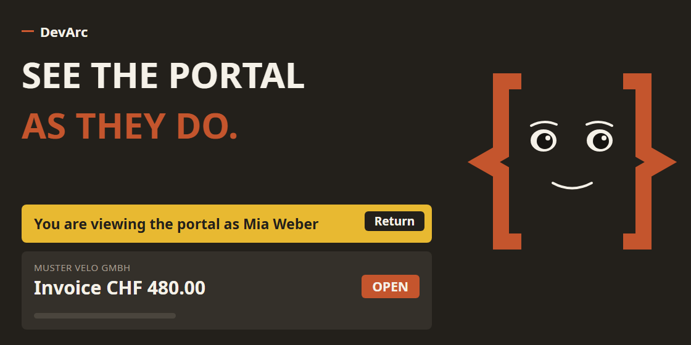

Let authorised staff see the customer portal exactly as a portal user sees it. A reason, the staff member's own password, a 30 minute limit, a full audit log and a notification to the customer.

A customer says an invoice or document is missing in the portal? Press View as customer, see the portal with the customer's own access rights, find the cause and press Return.
A mandatory reason, the password asked again before every switch, and an audit log with who, whom, why, start, expiry, end reason, IP address and browser.
The portal user gets a notification when the session starts. A yellow banner on every portal page shows the customer's name, the end time and a Return button.
Only internal users in one of these groups can use the feature.
Known limitation: my customers trusts the Salesperson field, so restrict who may edit it. Details in the README.
Support: info@devarc.ch · Source & docs · License: LGPL-3